Data Structures
Beyond the basic array.
Review: Normal Arrays
- Very fast
- Fixed size at creation
- Only one data type
An array is a fixed block of computer memory.
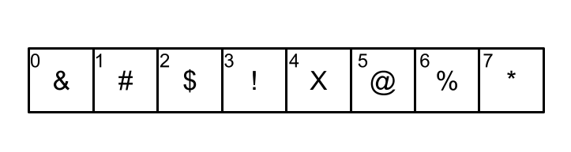
Arrays are surrounded by other data in memory.
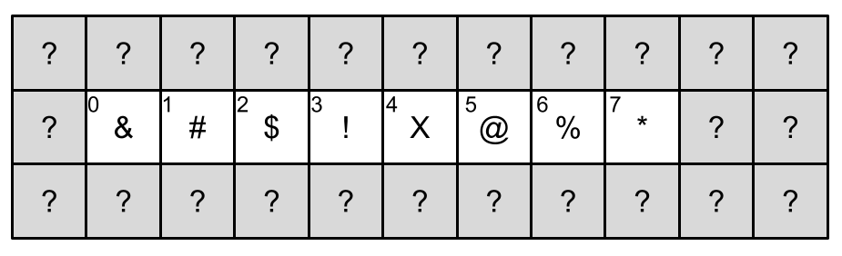
It’s not safe to add data to the end of an array.
So it’s not allowed.
But what if we need a data structure that has room to grow?
For example, in an ecosystem simulation, it doesn’t make sense to have a fixed population cap.
If you store the organisms in a normal array, you might run out of room as they reproduce.
The solution is to use a new data structure called an ArrayList.
ArrayLists know how to expand in a safe way.
The ArrayList
Arrays that know how to grow.
An ArrayList looks like this.
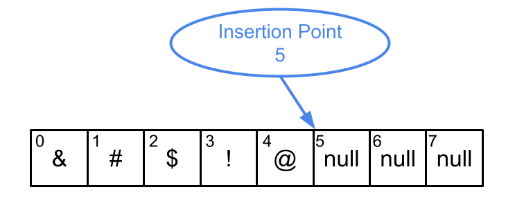
It’s just an ordinary array with extra space at the end.
It keeps track of the index of the next open slot.
Let’s see what happens as we fill these empty slots…
Added % in slot 5…
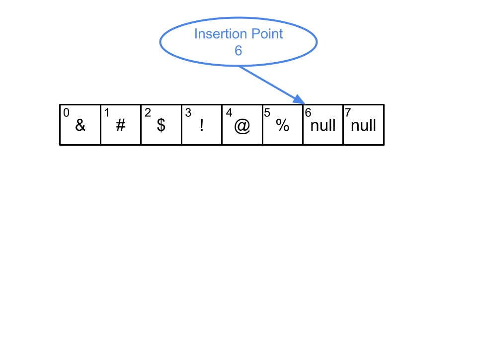
Added X in slot 6…

Added Ψ in slot 7…

Out of room! Create a new array with even more available space.
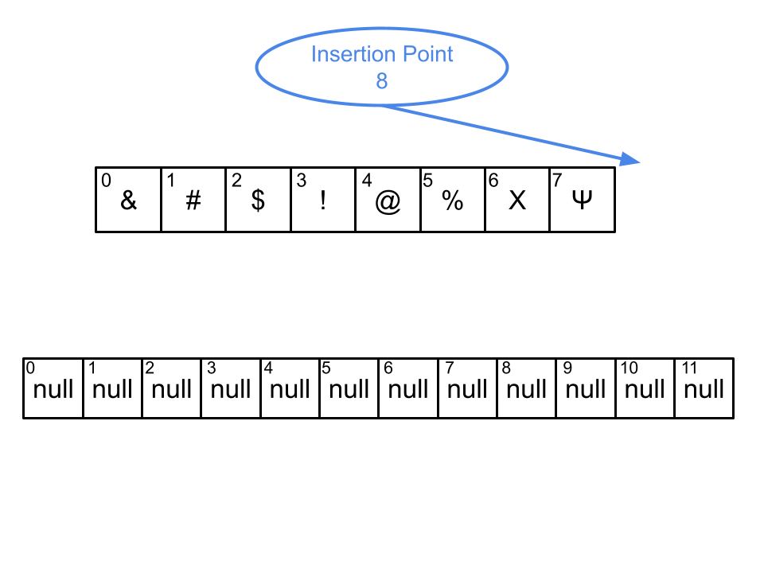
Copy over the old values.
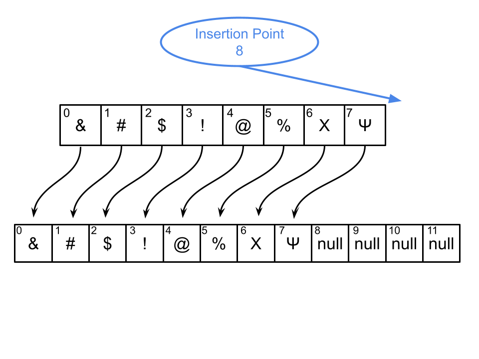
Use the expanded array for all future operations.

The ArrayList is programmed as a smart object.
It knows how to expand itself automatically whenever it runs out of capacity.
As users, we don’t need to keep track of the insertion point or the capacity.
Everything is managed for us behind the scenes.
It just works.
ArrayLists are just the beginning.
There are many other data structures out there.
The different data structures try to accomplish something that the basic array can’t easily do.
Let’s quickly look at a few other types.
Other Types of Data Structures
Note: We won’t use these in this class, but they are nice to know about.
The LinkedList
LinkedLists are made when cells of memory contain data along with the address of the next cell.
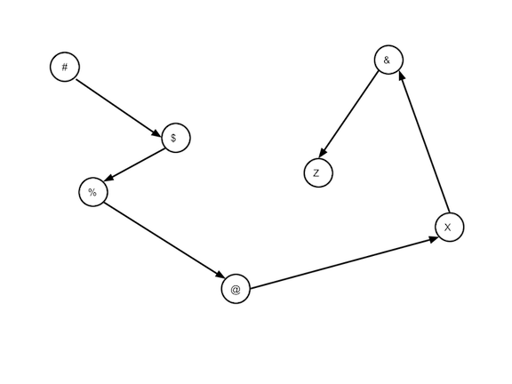
Advantage: very flexible.
Doesn’t need to be in a single block of memory.
No performance penalty for resizing.
It’s very easy to add new items to the list.
Other items don’t need to shuffle around in memory.
Just tell the cells that they have a new “neighbor”.

Disadvantage: Can’t immediately retrieve an item by index.
Getting item #500 takes 500 times longer than getting item #1 because the list is walked from head to tail.
We say that LinkedLists don’t allow “random access” like an array or an ArrayList does.
That’s a big disadvantage.
The Tree
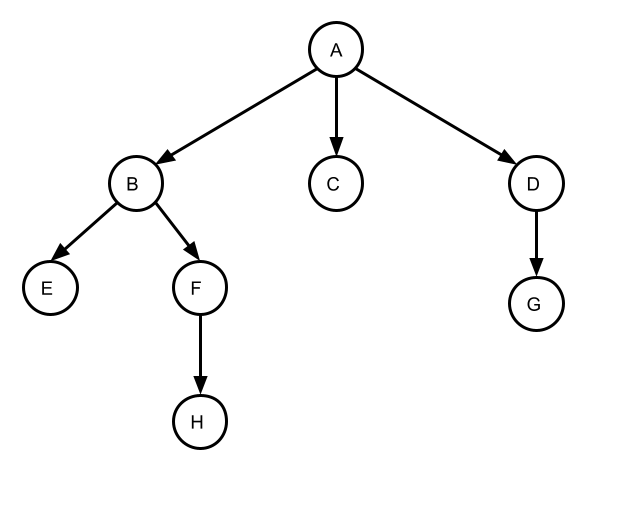
A Tree data structure represents data in a hierarchy.
They are made like a LinkedList, but with more branches.
They can be used to represent a file system.
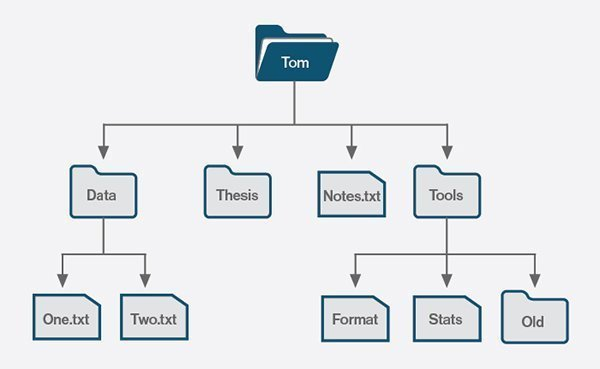
They can represent different outcomes of a game or a conversation.

Also used for modelling grammatical structures in human languages.
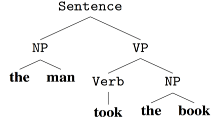
Trees are used to model computer languages as well.

In fact, every time you compile a Java program, the source code is parsed as an abstract syntax tree.
Creating an abstract syntax tree is one of the important steps in compiling a program.
Compiling means converting the program into machine code.
The Stack
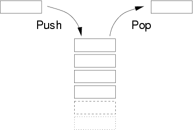
A stack is a simple resizable data structure.
You can only add or remove items from the “top” of the stack.
Like a stack of papers or a stack of plates, the last items added are the first ones that must be removed.
The oldest items are at the bottom.
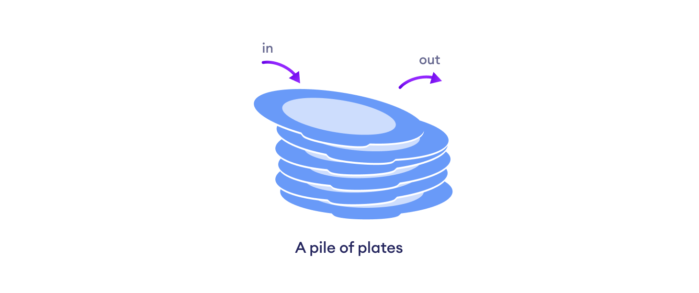
At first glance, they sound too simple to be very useful.
But in fact, they are used constantly whenever we run a program in Java.
Each method call creates a new stack frame.

A stack frame contains the local variables and the current state of the program.
A stack frame is removed when the method call returns.
Using the debugger, we can see the current state of the program by looking at the call sequence stack.

If you go on to study computer science, these concepts will be explored in much more depth.
Conclusion
Data structures are a core part of computer science.
Understanding which data structure to use for the task at hand is an important part of learning how to program.
Going forward, we will only focus on the ArrayList.
We will learn how to make one from scratch and we will practice using them to solve problems.